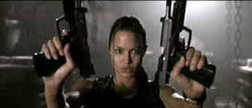

| Lara
Croft: Tomb Raider (SE) /C,A |
| Paramount/2001/100/ANA
2.35 |
Building a built-in movie fan base from
another source is a time-honored Hollywood conceit. This time out a
popular video game heroine has been turned into curvaceous life for the
big screen. Lara Croft is a lusciously crafted creation set free in a
CGI world whose cockamamie irrelevant plotting is subjugated to anything
that looks good.
Approaching the filmmaking challenge with a mandate
to film Lara from every lascivious angle, director Simon West has a good
time showing off his leading lady. Lara fights the bad guys with
acrobatic confidence and guns blasting from the hip. Lara's uniform of
the day is requisite scanty with costumes tight enough to squeak. The
major action sequences provide are active enough energy for
several sequels. Dialogue is clipped and not very clever, but Lara Croft
is something to ogle rather than ponder intellectually.
 |
| Two
big guns and other equipment. ©Paramount |
Angelina Jolie is an inspired choice to fill Lara
Croft's nooks and crannies. Buff and agile, Jolie struts with piquant
posturing through the various gyrations necessary for an action figure
to interact with computer graphics. Jon Voigt. Jolie's real life
Dad, is a nice casting touch as Sir Richard Croft, the famed tomb
raider.
Lara Croft: Tomb Raider is one spectacular DVD.
Every detail is extracted from the original source material with dynamic
effectiveness. Lara's tight fitting cute leather outfits positively
glisten seductively. There are lots of dark scenes in the film and black
levels are as rich as can be offering outstanding depth and perfect
shadow detail. Color is wonderfully realized, perfectly saturated and
controlled. Flesh tones are accurate and there is not a hint of color
bleeding. Perfectly sharp images are clean and unenhanced. The Dolby
Digital 5:1 sound accompanies every CGI confrontation in perfect harmony
delivering effects to every corner of the home theater.
|
|
|
|

Selections from the Feature Archive include articles on
Akira Kurosawa, Blonde Bimbos,
Frank
Darabont, Steven Culp,
John
Herzfeld or Vietnam: The
Hollywood Pariah, and many more....
The Bitch Brigade

A line-up of lean-lipped
actresses who marched through Hollywood in a high heeled goose step armed with razor sharp
dialogue. Click on the image to read all about them.
 
ISF Monitor Calibrations in the
Tristate New York area. Lots of hardware info and frequent hardware peaks from video expert Kevin
Miller. They may be judgmental, but that's the point, isn't it. Lots of DVD reviews plus news and
more.

Mystery writer Fred Hunter digs into classic films on DVD. Check out
his insightful reviews at The Classics on DVD.

News, information, features about current films in theaters and in the
pipeline. Easy to use interface.
|